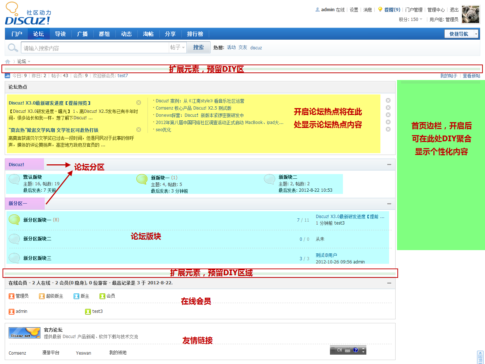

论坛首页
论坛首页是用户访问论坛时，进入到的第一个页面。它汇集了论坛分区、版块、子版块等核心元素，展示了论坛帖子和会员汇总信息、论坛公告、论坛热点、在线会员、友情链接等丰富信息，同时包含了首页右边栏和DIY等灵活的扩展区域。下面来为大家详细介绍一下以上的元素，请看下图：
以下是各项的详细内容：
论坛分区目的是将内容相近的版块归类，使论坛的结构清晰。管理员可以在后台添加、并设置分区的样式。分区下的版块默认竖排显示，可在后台设置为横排显示。
论坛版块的划分，细化了内容的分类，使用户明确的定位到自己需要或是感兴趣的地方，首页的论坛版块显示版块的名称、简介、图标来让用户了解该版块的定位，显示主题数、帖数、新主题数、最新主题与其发布时间和作者，来让用户清晰的看到今日新帖的数量及此版块最新的帖子，版块的图标、名称、简介等在后台 论坛=>版块管理=>版块编辑 下都可以个性化设置
当用户回复、点评、评论、收藏、分享主题时，会给主题增加热度值，若论坛首页设置显示论坛热点，将在此聚合显示七天内的热点主题，此功能可以让用户清晰的看到大家近几天在讨论的热点内容，方便用户查看并及时参与到话题中。论坛热帖功能需要在后台 界面->界面设置->论坛首页下开启，并设置热点显示数量、论坛热点天数等参数，若不开启则不显示此项
显示当前在线的会员，通过在线列表图标区分会员的身份。若在后台 界面=>界面设置=>论坛首页 下设置缩略显示在线列表，在线列表将只显示在线用户数，不显示详情，此时会员可手动打开在线用户列表(最大在线超过 500 人系统将自动缩略显示在线列表)
首页边栏将显示在页面右侧区域，若站长想要在此展示一些信息，可以在后台 界面->界面设置->论坛首页 下开启，开启后可以通过DIY来添加合适的模块聚合所需的内容，达到个性化展示目的
系统在论坛首页还预留了两处可供DIY区域，供站长打造个性化元素。顶部DIY区域位置醒目，站长可以充分利用此区域来展示一些吸引用户或者需要推广的内容。